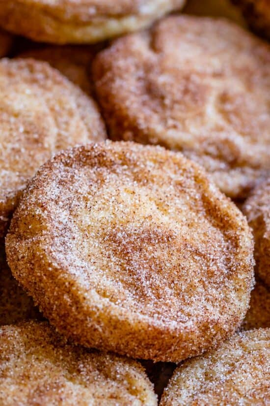

Snickerdoodles!!

Description
This delectable treat is one of my favorites to make for a weekend get together or just to have a sweet treat.
Its super easy to make and only takes about 30 mins to an Hour.
Ingredients
- 1 Cup Salted Butter (2 Sticks)
- 1 & 1/3 Cup Granulated Sugar
- 1/3 Cup Brown Sugar (packed)
- 2 Large Eggs
- 2 Teaspoons of Vanilla Extract
- 3 & 1/4 Cups All Purpose Flour (spooned and leveled)
- 1 Teaspoon Baking Soda
- 3/4 Teaspoon Kosher Salt
- 1 & 1/2 Teaspoons Cream Of Tartar
For Rolling
- 1/3 Cup Granulated Sugar
- 1 & 1/2 Tablespoons Cinnamon
Steps
- Prehear the oven to 350 Degrees and prepare a few baking sheets with parchment paper.
- In a large bowl (or stand mixer), beat 1 cup butter for a couple minutes until smooth, scraping the sides and bottoma few times in between.
- Add 1 & 1/3 Cup white sugar and 1/3 cup packed brown sugar. Beat for 2 minutes, taking the time to scrape the bottom and sides of the bowl in between. Your butter and sugar shold be light and fluffy with no chunks at all.
- Add 2 eggs and 2 teaspoons vanilla. Beat well, scraping the sides and bottom of the bowl. Make sure you beat it long enough that it becomes smooth and homogenous.
- Add 3 and 1/4 cups flour (be sure to spoon it into the measuring cup! Don't dip your cup into the flour bin, you will pack your flour and end up with too much!) Don't mix the flour in yet.
- Use a small spoon (I use my teaspoon) to stir 1 teaspoon baking soda, 3/4 teaspoon kosher salt, and 1 and 1/2 teaspoons cream of tartar into the flour. Gently beat the flour mixture into the butter mixture. Don't overdo it. There should still be flour streaks when you stop your mixer. Use a spatula to scrape down the edges of the bowl.
- Continue beating just a few more seconds until all the flour streaks are gone. Do not over mix! You want to make sure all the ingredients are combined, but once that is done, stop mixing. Over mixing dough = tough cookies.
- Use a large cookie scoop or a spoon to shape the dough. You want dough balls that are about 1 and 1/2 to 2 inches across.
- Roll the cookies. In a small or medium bowl, add 1/3 cup sugar and 1 and 1/2 tablespoons cinnamon. Stir together. Roll the shaped cookies in the cinnamon-sugar to coat.
- Place cookie dough balls on the prepared baking sheet with about 2 inches in between them.
- Bake the cookies at 350 for about 9-11 minutes, until the edges are barely set. It's ok if the centers of the cookies (about the size of a quarter) are still shiny. The rest of the cookie should be matte. It's VERY important to not over bake snickerdoodles; underbaking slightly is what helps give them that soft and chewy texture.
- Shape the cookies. Immediately after taking the cookies out of the oven, use a spoon to push the edges of the cookies toward their centers. This makes the cookies round in shape and makes the center thicker and more chewy. You have to do this within 30-60 seconds of taking them out of the oven, before the edges harden.
- Let the cookies set up on the pan for at least 3-5 minutes. Remove the cookies to a wire cooling rack and let cool for a few minutes.
- While the cookies are still warm, but cool enough to handle (and not falling apart), place each cookie back into the bowl of cinnamon sugar*. Coat one side of the cookie, then flip it over and coat the other side. This gives you the ultimate cinnamon-sugar edge to your snickerdoodle! Enjoy one right away with a glass of milk!
- Freezer instructions: You can freeze this dough and bake later! I like to shape the dough into balls, roll them in cinnamon sugar, and store them in a ziplock bag. They will keep in the freezer for up to 3 months. I never thaw cookie dough before baking. Just bake straight from frozen and add a couple minutes to the bake time.
Home